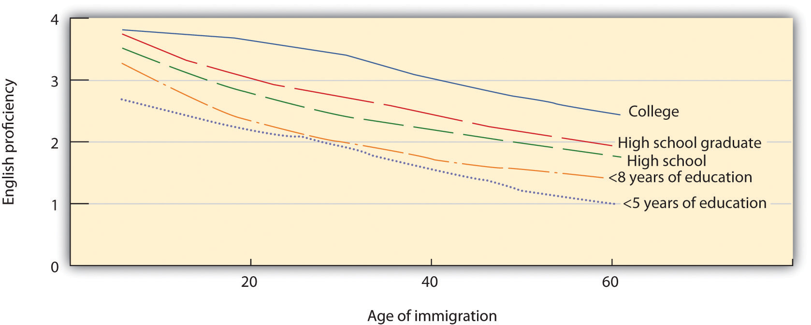
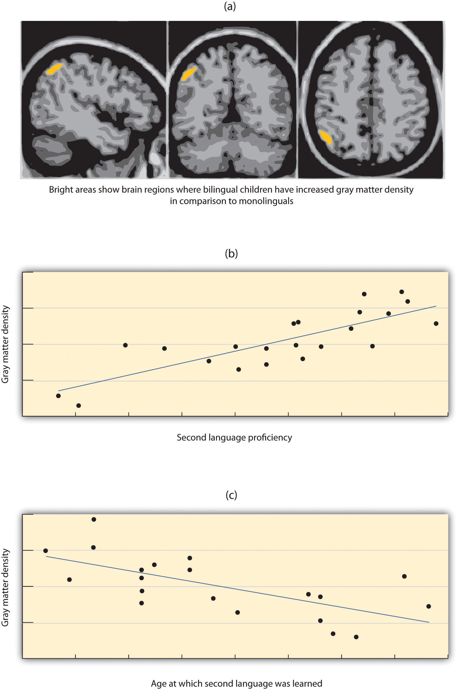

Human language is the most complex behavior on the planet and, at least as far as we know, in the universe. Language involves both the ability to comprehend spoken and written words and to create communication in real time when we speak or write. Most languages are oral, generated through speaking. Speaking involves a variety of complex cognitive, social, and biological processes including operation of the vocal cords, and the coordination of breath with movements of the throat and mouth, and tongue. Other languages are sign languages, in which the communication is expressed by movements of the hands. The most common sign language is American Sign Language (ASL), currently spoken by more than 500,000 people in the United States alone.
Although language is often used for the transmission of information (“turn right at the next light and then go straight,” “Place tab A into slot B”), this is only its most mundane function. Language also allows us to access existing knowledge, to draw conclusions, to set and accomplish goals, and to understand and communicate complex social relationships. Language is fundamental to our ability to think, and without it we would be nowhere near as intelligent as we are.
Language can be conceptualized in terms of sounds, meaning, and the environmental factors that help us understand it. Phonemes are the elementary sounds of our language, morphemes are the smallest units of meaning in a language, syntax is the set of grammatical rules that control how words are put together, and contextual information is the elements of communication that are not part of the content of language but that help us understand its meaning.
A phonemeThe smallest unit of sound that makes a meaningful difference in a language. is the smallest unit of sound that makes a meaningful difference in a language. The word “bit” has three phonemes, /b/, /i/, and /t/ (in transcription, phonemes are placed between slashes), and the word “pit” also has three: /p/, /i/, and /t/. In spoken languages, phonemes are produced by the positions and movements of the vocal tract, including our lips, teeth, tongue, vocal cords, and throat, whereas in sign languages phonemes are defined by the shapes and movement of the hands.
There are hundreds of unique phonemes that can be made by human speakers, but most languages only use a small subset of the possibilities. English contains about 45 phonemes, whereas other languages have as few as 15 and others more than 60. The Hawaiian language contains only about a dozen phonemes, including 5 vowels (a, e, i, o, and u) and 7 consonants (h, k, l, m, n, p, and w).
In addition to using a different set of phonemes, because the phoneme is actually a category of sounds that are treated alike within the language, speakers of different languages are able to hear the difference only between some phonemes but not others. This is known as the categorical perception of speech sounds. English speakers can differentiate the /r/ phoneme from the /l/ phoneme, and thus “rake” and “lake” are heard as different words. In Japanese, however, /r/ and /l/ are the same phoneme, and thus speakers of that language cannot tell the difference between the word “rake” and the word “lake.” Try saying the words “cool” and “keep” out loud. Can you hear the difference between the two /k/ sounds? To English speakers they both sound the same, but to speakers of Arabic these represent two different phonemes.
Infants are born able to understand all phonemes, but they lose their ability to do so as they get older; by 10 months of age a child’s ability to recognize phonemes becomes very similar to that of the adult speakers of the native language. Phonemes that were initially differentiated come to be treated as equivalent (Werker & Tees, 2002).Werker, J. F., & Tees, R. C. (2002). Cross-language speech perception: Evidence for perceptual reorganization during the first year of life. Infant Behavior & Development, 25(1), 121–133.
Figure 9.11

When adults hear speech sounds that gradually change from one phoneme to another, they do not hear the continuous change; rather, they hear one sound until they suddenly begin hearing the other. In this case, the change is from /ba/ to /pa/.
Source: Adapted from Wood, C. C. (1976). Discriminability, response bias, and phoneme categories in discrimination of voice onset time. Journal of the Acoustical Society of America, 60(6), 1381–1389.
Whereas phonemes are the smallest units of sound in language, a morphemeA string of one or more phonemes that makes up the smallest units of meaning in a language. is a string of one or more phonemes that makes up the smallest units of meaning in a language. Some morphemes, such as one-letter words like “I” and “a,” are also phonemes, but most morphemes are made up of combinations of phonemes. Some morphemes are prefixes and suffixes used to modify other words. For example, the syllable “re-” as in “rewrite” or “repay” means “to do again,” and the suffix “-est” as in “happiest” or “coolest” means “to the maximum.”
SyntaxThe set of rules of a language that is used to construct sentences. is the set of rules of a language by which we construct sentences. Each language has a different syntax. The syntax of the English language requires that each sentence have a noun and a verb, each of which may be modified by adjectives and adverbs. Some syntaxes make use of the order in which words appear, while others do not. In English, “The man bites the dog” is different from “The dog bites the man.” In German, however, only the article endings before the noun matter. “Der Hund beisst den Mann” means “The dog bites the man” but so does “Den Mann beisst der Hund.”
Words do not possess fixed meanings but change their interpretation as a function of the context in which they are spoken. We use contextual informationInformation surrounding language that is used to help interpret it.—the information surrounding language—to help us interpret it. Examples of contextual information include the knowledge that we have and that we know that other people have, and nonverbal expressions such as facial expressions, postures, gestures, and tone of voice. Misunderstandings can easily arise if people aren’t attentive to contextual information or if some of it is missing, such as it may be in newspaper headlines or in text messages.
Anyone who has tried to master a second language as an adult knows the difficulty of language learning. And yet children learn languages easily and naturally. Children who are not exposed to language early in their lives will likely never learn one. Case studies, including Victor the “Wild Child,” who was abandoned as a baby in France and not discovered until he was 12, and Genie, a child whose parents kept her locked in a closet from 18 months until 13 years of age, are (fortunately) two of the only known examples of these deprived children. Both of these children made some progress in socialization after they were rescued, but neither of them ever developed language (Rymer, 1993).Rymer, R. (1993). Genie: An abused child’s flight from silence. New York, NY: HarperCollins. This is also why it is important to determine quickly if a child is deaf and to begin immediately to communicate in sign language. Deaf children who are not exposed to sign language during their early years will likely never learn it (Mayberry, Lock, & Kazmi, 2002).Mayberry, R. I., Lock, E., & Kazmi, H. (2002). Development: Linguistic ability and early language exposure. Nature, 417(6884), 38.
For many years psychologists assumed that there was a critical periodA time in which learning can easily occur. (a time in which learning can easily occur) for language learning, lasting between infancy and puberty, and after which language learning was more difficult or impossible (Lenneberg, 1967; Penfield & Roberts, 1959).Lenneberg, E. (1967). Biological foundations of language. New York, NY: John Wiley & Sons; Penfield, W., & Roberts, L. (1959). Speech and brain mechanisms. Princeton, NJ: Princeton University Press. But more recent research has provided a different interpretation.
An important study by Jacqueline Johnson and Elissa Newport (1989)Johnson, J. S., & Newport, E. L. (1989). Critical period effects in second language learning: The influence of maturational state on the acquisition of English as a second language. Cognitive Psychology, 21(1), 60–99. using Chinese and Korean speakers who had learned English as a second language provided the first insight. The participants were all adults who had immigrated to the United States between 3 and 39 years of age and who were tested on their English skills by being asked to detect grammatical errors in sentences. Johnson and Newport found that the participants who had begun learning English before they were 7 years old learned it as well as native English speakers but that the ability to learn English dropped off gradually for the participants who had started later. Newport and Johnson also found a correlation between the age of acquisition and the variance in the ultimate learning of the language. While early learners were almost all successful in acquiring their language to a high degree of proficiency, later learners showed much greater individual variation.
Johnson and Newport’s finding that children who immigrated before they were 7 years old learned English fluently seemed consistent with the idea of a “critical period” in language learning. But their finding of a gradual decrease in proficiency for those who immigrated between 8 and 39 years of age was not—rather, it suggested that there might not be a single critical period of language learning that ended at puberty, as early theorists had expected, but that language learning at later ages is simply better when it occurs earlier. This idea was reinforced in research by Hakuta, Bialystok, and Wiley (2003),Hakuta, K., Bialystok, E., & Wiley, E. (2003). Critical evidence: A test of the critical-period hypothesis for second-language acquisition. Psychological Science, 14(1), 31–38. who examined U.S. census records of language learning in millions of Chinese and Spanish speakers living in the United States. The census form asks respondents to describe their own English ability using one of five categories: “not at all,” “not well,” “well,” “very well,” and “speak only English.” The results of this research dealt another blow to the idea of the critical period, because it showed that regardless of what year was used as a cutoff point for the end of the critical period, there was no evidence for any discontinuity in language-learning potential. Rather, the results (Figure 9.12 "English Proficiency in Native Chinese Speakers") showed that the degree of success in second-language acquisition declined steadily throughout the respondent’s life span. The difficulty of learning language as one gets older is probably due to the fact that, with age, the brain loses its plasticityThe brain's ability to develop new neural connections.—that is, its ability to develop new neural connections.
Figure 9.12 English Proficiency in Native Chinese Speakers
Hakuta, Bialystok, and Wiley (2003) found no evidence for critical periods in language learning. Regardless of level of education, self-reported second-language skills decreased consistently across age of immigration.
Source: Adapted from Hakuta, K., Bialystok, E., & Wiley, E. (2003). Critical evidence: A test of the critical-period hypothesis for second-language acquisition. Psychological Science, 14(1), 31–38.
For the 90% of people who are right-handed, language is stored and controlled by the left cerebral cortex, although for some left-handers this pattern is reversed. These differences can easily be seen in the results of neuroimaging studies that show that listening to and producing language creates greater activity in the left hemisphere than in the right. Broca’s areaAn area of the brain in front of the left hemisphere near the motor cortex that is responsible for language production., an area in front of the left hemisphere near the motor cortex, is responsible for language production (Figure 9.13 "Drawing of Brain Showing Broca’s and Wernicke’s Areas"). This area was first localized in the 1860s by the French physician Paul Broca, who studied patients with lesions to various parts of the brain. Wernicke’s areaAn area of the brain next to the auditory cortex that is responsible for language comprehension., an area of the brain next to the auditory cortex, is responsible for language comprehension.
Figure 9.13 Drawing of Brain Showing Broca’s and Wernicke’s Areas

For most people the left hemisphere is specialized for language. Broca’s area, near the motor cortex, is involved in language production, whereas Wernicke’s area, near the auditory cortex, is specialized for language comprehension.
Evidence for the importance of Broca’s and Wernicke’s areas in language is seen in patients who experience aphasiaA condition in which language functions are severely impaired., a condition in which language functions are severely impaired. People with Broca’s aphasia have difficulty producing speech, whereas people with damage to Wernicke’s area can produce speech, but what they say makes no sense and they have trouble understanding language.
Language learning begins even before birth, because the fetus can hear muffled versions of speaking from outside the womb. Moon, Cooper, and Fifer (1993)Moon, C., Cooper, R. P., & Fifer, W. P. (1993). Two-day-olds prefer their native language. Infant Behavior & Development, 16(4), 495–500. found that infants only two days old sucked harder on a pacifier when they heard their mothers’ native language being spoken than when they heard a foreign language, even when strangers were speaking the languages. Babies are also aware of the patterns of their native language, showing surprise when they hear speech that has a different patterns of phonemes than those they are used to (Saffran, Aslin, & Newport, 2004).Saffran, J. R., Aslin, R. N., & Newport, E. L. (2004). Statistical learning by 8-month-old infants. New York, NY: Psychology Press.
During the first year or so after birth, and long before they speak their first words, infants are already learning language. One aspect of this learning is practice in producing speech. By the time they are 6 to 8 weeks old, babies start making vowel sounds (“ooohh,” “aaahh,” “goo”) as well as a variety of cries and squeals to help them practice.
At about 7 months, infants begin babblingEngaging in intentional vocalizations that lack specific meaning., engaging in intentional vocalizations that lack specific meaning. Children babble as practice in creating specific sounds, and by the time they are 1 year old, the babbling uses primarily the sounds of the language that they are learning (de Boysson-Bardies, Sagart, & Durand, 1984).de Boysson-Bardies, B., Sagart, L., & Durand, C. (1984). Discernible differences in the babbling of infants according to target language. Journal of Child Language, 11(1), 1–15. These vocalizations have a conversational tone that sounds meaningful even though it isn’t. Babbling also helps children understand the social, communicative function of language. Children who are exposed to sign language babble in sign by making hand movements that represent real language (Petitto & Marentette, 1991).Petitto, L. A., & Marentette, P. F. (1991). Babbling in the manual mode: Evidence for the ontogeny of language. Science, 251(5000), 1493–1496.
At the same time that infants are practicing their speaking skills by babbling, they are also learning to better understand sounds and eventually the words of language. One of the first words that children understand is their own name, usually by about 6 months, followed by commonly used words like “bottle,” “mama,” and “doggie” by 10 to 12 months (Mandel, Jusczyk, & Pisoni, 1995).Mandel, D. R., Jusczyk, P. W., & Pisoni, D. B. (1995). Infants’ recognition of the sound patterns of their own names. Psychological Science, 6(5), 314–317.
The infant usually produces his or her first words at about 1 year of age. It is at this point that the child first understands that words are more than sounds—they refer to particular objects and ideas. By the time children are 2 years old, they have a vocabulary of several hundred words, and by kindergarten their vocabularies have increased to several thousand words. By fifth grade most children know about 50,000 words and by the time they are in college, about 200,000.
The early utterances of children contain many errors, for instance, confusing /b/ and /d/, or /c/ and /z/. And the words that children create are often simplified, in part because they are not yet able to make the more complex sounds of the real language (Dobrich & Scarborough, 1992).Dobrich, W., & Scarborough, H. S. (1992). Phonological characteristics of words young children try to say. Journal of Child Language, 19(3), 597–616. Children may say “keekee” for kitty, “nana” for banana, and “vesketti” for spaghetti in part because it is easier. Often these early words are accompanied by gestures that may also be easier to produce than the words themselves. Children’s pronunciations become increasingly accurate between 1 and 3 years, but some problems may persist until school age.
Most of a child’s first words are nouns, and early sentences may include only the noun. “Ma” may mean “more milk please” and “da” may mean “look, there’s Fido.” Eventually the length of the utterances increases to two words (“mo ma” or “da bark”), and these primitive sentences begin to follow the appropriate syntax of the native language.
Because language involves the active categorization of sounds and words into higher level units, children make some mistakes in interpreting what words mean and how to use them. In particular, they often make overextensions of concepts, which means they use a given word in a broader context than appropriate. A child might at first call all adult men “daddy” or all animals “doggie.”
Children also use contextual information, particularly the cues that parents provide, to help them learn language. Infants are frequently more attuned to the tone of voice of the person speaking than to the content of the words themselves, and are aware of the target of speech. Werker, Pegg, and McLeod (1994)Werker, J. F., Pegg, J. E., & McLeod, P. J. (1994). A cross-language investigation of infant preference for infant-directed communication. Infant Behavior & Development, 17(3), 323–333. found that infants listened longer to a woman who was speaking to a baby than to a woman who was speaking to another adult.
Children learn that people are usually referring to things that they are looking at when they are speaking (Baldwin, 1993),Baldwin, D. A. (1993). Early referential understanding: Infants’ ability to recognize referential acts for what they are. Developmental Psychology, 29(5), 832–843. and that that the speaker’s emotional expressions are related to the content of their speech. Children also use their knowledge of syntax to help them figure out what words mean. If a child hears an adult point to a strange object and say, “this is a dirb,” they will infer that a “dirb” is a thing, but if they hear them say, “this is a one of those dirb things” they will infer that it refers to the color or other characteristic of the object. And if they hear the word “dirbing,” they will infer that “dirbing” is something that we do (Waxman, 1990).Waxman, S. R. (1990). Linguistic biases and the establishment of conceptual hierarchies: Evidence from preschool children. Cognitive Development, 5(2), 123–150.
Psychological theories of language learning differ in terms of the importance they place on nature versus nurture. Yet it is clear that both matter. Children are not born knowing language; they learn to speak by hearing what happens around them. On the other hand, human brains, unlike those of any other animal, are prewired in a way that leads them, almost effortlessly, to learn language.
Perhaps the most straightforward explanation of language development is that it occurs through principles of learning, including association, reinforcement, and the observation of others (Skinner, 1965).Skinner, B. F. (1965). Science and human behavior. New York, NY: Free Press. There must be at least some truth to the idea that language is learned, because children learn the language that they hear spoken around them rather than some other language. Also supporting this idea is the gradual improvement of language skills with time. It seems that children modify their language through imitation, reinforcement, and shaping, as would be predicted by learning theories.
But language cannot be entirely learned. For one, children learn words too fast for them to be learned through reinforcement. Between the ages of 18 months and 5 years, children learn up to 10 new words every day (Anglin, 1993).Anglin, J. M. (1993). Vocabulary development: A morphological analysis. Monographs of the Society for Research in Child Development, 58(10), v–165. More importantly, language is more generative than it is imitative. GenerativityThe fact that speakers of a language can compose sentences to represent new ideas that they have never before been exposed to. refers to the fact that speakers of a language can compose sentences to represent new ideas that they have never before been exposed to. Language is not a predefined set of ideas and sentences that we choose when we need them, but rather a system of rules and procedures that allows us to create an infinite number of statements, thoughts, and ideas, including those that have never previously occurred. When a child says that she “swimmed” in the pool, for instance, she is showing generativity. No adult speaker of English would ever say “swimmed,” yet it is easily generated from the normal system of producing language.
Other evidence that refutes the idea that all language is learned through experience comes from the observation that children may learn languages better than they ever hear them. Deaf children whose parents do not speak ASL very well nevertheless are able to learn it perfectly on their own, and may even make up their own language if they need to (Goldin-Meadow & Mylander, 1998).Goldin-Meadow, S., & Mylander, C. (1998). Spontaneous sign systems created by deaf children in two cultures. Nature, 391(6664), 279–281. A group of deaf children in a school in Nicaragua, whose teachers could not sign, invented a way to communicate through made-up signs (Senghas, Senghas, & Pyers, 2005).Senghas, R. J., Senghas, A., & Pyers, J. E. (2005). The emergence of Nicaraguan Sign Language: Questions of development, acquisition, and evolution. In S. T. Parker, J. Langer, & C. Milbrath (Eds.), Biology and knowledge revisited: From neurogenesis to psychogenesis (pp. 287–306). Mahwah, NJ: Lawrence Erlbaum Associates. The development of this new Nicaraguan Sign Language has continued and changed as new generations of students have come to the school and started using the language. Although the original system was not a real language, it is becoming closer and closer every year, showing the development of a new language in modern times.
The linguist Noam Chomsky is a believer in the nature approach to language, arguing that human brains contain a language acquisition device that includes a universal grammar that underlies all human language (Chomsky, 1965, 1972).Chomsky, N. (1965). Aspects of the theory of syntax. Cambridge, MA: MIT Press; Chomsky, N. (1972). Language and mind (Extended ed.). New York, NY: Harcourt, Brace & Jovanovich. According to this approach, each of the many languages spoken around the world (there are between 6,000 and 8,000) is an individual example of the same underlying set of procedures that are hardwired into human brains. Chomsky’s account proposes that children are born with a knowledge of general rules of syntax that determine how sentences are constructed.
Chomsky differentiates between the deep structureHow an idea is represented in the fundamental universal grammar that is common to all languages. of an idea—how the idea is represented in the fundamental universal grammar that is common to all languages, and the surface structureHow an idea is expressed in any one language. of the idea—how it is expressed in any one language. Once we hear or express a thought in surface structure, we generally forget exactly how it happened. At the end of a lecture, you will remember a lot of the deep structure (i.e., the ideas expressed by the instructor), but you cannot reproduce the surface structure (the exact words that the instructor used to communicate the ideas).
Although there is general agreement among psychologists that babies are genetically programmed to learn language, there is still debate about Chomsky’s idea that there is a universal grammar that can account for all language learning. Evans and Levinson (2009)Evans, N., & Levinson, S. C. (2009). The myth of language universals: Language diversity and its importance for cognitive science. Behavioral and Brain Sciences, 32(5), 429–448. surveyed the world’s languages and found that none of the presumed underlying features of the language acquisition device were entirely universal. In their search they found languages that did not have noun or verb phrases, that did not have tenses (e.g., past, present, future), and even some that did not have nouns or verbs at all, even though a basic assumption of a universal grammar is that all languages should share these features.
Although it is less common in the United States than in other countries, bilingualismThe ability to speak two languages. (the ability to speak two languages) is becoming more and more frequent in the modern world. Nearly one-half of the world’s population, including 18% of U.S. citizens, grows up bilingual.
In recent years many U.S. states have passed laws outlawing bilingual education in schools. These laws are in part based on the idea that students will have a stronger identity with the school, the culture, and the government if they speak only English, and in part based on the idea that speaking two languages may interfere with cognitive development.
Some early psychological research showed that, when compared with monolingual children, bilingual children performed more slowly when processing language, and their verbal scores were lower. But these tests were frequently given in English, even when this was not the child’s first language, and the children tested were often of lower socioeconomic status than the monolingual children (Andrews, 1982).Andrews, I. (1982). Bilinguals out of focus: A critical discussion. International Review of Applied Linguistics in Language Teaching, 20(4), 297–305.
More current research that has controlled for these factors has found that, although bilingual children may in some cases learn language somewhat slower than do monolingual children (Oller & Pearson, 2002),Oller, D. K., & Pearson, B. Z. (2002). Assessing the effects of bilingualism: A background. In D. K. Oller & R. E. Eilers (Eds.), Language and literacy in bilingual children (pp. 3–21). Tonawanda, NY: Multilingual Matters. bilingual and monolingual children do not significantly differ in the final depth of language learning, nor do they generally confuse the two languages (Nicoladis & Genesee, 1997).Nicoladis, E., & Genesee, F. (1997). Language development in preschool bilingual children. Journal of Speech-Language Pathology and Audiology, 21(4), 258–270. In fact, participants who speak two languages have been found to have better cognitive functioning, cognitive flexibility, and analytic skills in comparison to monolinguals (Bialystok, 2009).Bialystok, E. (2009). Bilingualism: The good, the bad, and the indifferent. Bilingualism: Language and Cognition, 12(1), 3–11. Research (Figure 9.15 "Gray Matter in Bilinguals") has also found that learning a second language produces changes in the area of the brain in the left hemisphere that is involved in language, such that this area is denser and contains more neurons (Mechelli et al., 2004).Mechelli, A., Crinion, J. T., Noppeney, U., O’Doherty, J., Ashburner, J., Frackowiak, R. S., & Price C. J. (2004). Structural plasticity in the bilingual brain: Proficiency in a second language and age at acquisition affect grey-matter density. Nature, 431, 757. Furthermore, the increased density is stronger in those individuals who are most proficient in their second language and who learned the second language earlier. Thus, rather than slowing language development, learning a second language seems to increase cognitive abilities.
Figure 9.15 Gray Matter in Bilinguals
Andrea Mechelli and her colleagues (2004) found that children who were bilingual had increased gray matter density (i.e., more neurons) in cortical areas related to language in comparison to monolinguals (panel a), that gray matter density correlated positively with second language proficiency (panel b) and that gray matter density correlated negatively with the age at which the second language was learned (panel c).
Source: Adapted from Mechelli, A., Crinion, J. T., Noppeney, U., O’Doherty, J., Ashburner, J., Frackowiak, R. S., & Price C. J. (2004). Structural plasticity in the bilingual brain: Proficiency in a second language and age at acquisition affect grey-matter density. Nature, 431, 757.
Nonhuman animals have a wide variety of systems of communication. Some species communicate using scents; others use visual displays, such as baring the teeth, puffing up the fur, or flapping the wings; and still others use vocal sounds. Male songbirds, such as canaries and finches, sing songs to attract mates and to protect territory, and chimpanzees use a combination of facial expressions, sounds, and actions, such as slapping the ground, to convey aggression (de Waal, 1989).De Waal, F. (1989). Peacemaking among primates. Cambridge, MA: Harvard University Press. Honeybees use a “waggle dance” to direct other bees to the location of food sources (von Frisch, 1956).Von Frisch, K. (1956). Bees: Their vision, chemical senses, and language. Ithaca, NY: Cornell University Press. The language of vervet monkeys is relatively advanced in the sense that they use specific sounds to communicate specific meanings. Vervets make different calls to signify that they have seen either a leopard, a snake, or a hawk (Seyfarth & Cheney, 1997).Seyfarth, R. M., & Cheney, D. L. (1997). Behavioral mechanisms underlying vocal communication in nonhuman primates. Animal Learning & Behavior, 25(3), 249–267.
Despite their wide abilities to communicate, efforts to teach animals to use language have had only limited success. One of the early efforts was made by Catherine and Keith Hayes, who raised a chimpanzee named Viki in their home along with their own children. But Viki learned little and could never speak (Hayes & Hayes, 1952).Hayes, K. J., and Hayes, C. (1952). Imitation in a home-raised chimpanzee. Journal of Comparative and Physiological Psychology, 45, 450–459. Researchers speculated that Viki’s difficulties might have been in part because the she could not create the words in her vocal cords, and so subsequent attempts were made to teach primates to speak using sign language or by using boards on which they can point to symbols.
Allen and Beatrix Gardner worked for many years to teach a chimpanzee named Washoe to sign using ASL. Washoe, who lived to be 42 years old, could label up to 250 different objects and make simple requests and comments, such as “please tickle” and “me sorry” (Fouts, 1997).Fouts, R. (1997). Next of kin: What chimpanzees have taught me about who we are. New York, NY: William Morrow. Washoe’s adopted daughter Loulis, who was never exposed to human signers, learned more than 70 signs simply by watching her mother sign.
The most proficient nonhuman language speaker is Kanzi, a bonobo who lives at the Language Learning Center at Georgia State University (Savage-Rumbaugh, & Lewin, 1994).Savage-Rumbaugh, S., & Lewin, R. (1994). Kanzi: The ape at the brink of the human mind. Hoboken, NJ: John Wiley & Sons. As you can see in Note 9.44 "Video Clip: Language Recognition in Bonobos", Kanzi has a propensity for language that is in many ways similar to humans’. He learned faster when he was younger than when he got older, he learns by observation, and he can use symbols to comment on social interactions, rather than simply for food treats. Kanzi can also create elementary syntax and understand relatively complex commands. Kanzi can make tools and can even play Pac-Man.
The bonobo Kanzi is the most proficient known nonhuman language speaker.
And yet even Kanzi does not have a true language in the same way that humans do. Human babies learn words faster and faster as they get older, but Kanzi does not. Each new word he learns is almost as difficult as the one before. Kanzi usually requires many trials to learn a new sign, whereas human babies can speak words after only one exposure. Kanzi’s language is focused primarily on food and pleasure and only rarely on social relationships. Although he can combine words, he generates few new phrases and cannot master syntactic rules beyond the level of about a 2-year-old human child (Greenfield & Savage-Rumbaugh, 1991).Greenfield, P. M., & Savage-Rumbaugh, E. S. (1991). Imitation, grammatical development, and the invention of protogrammar by an ape. In N. A. Krasnegor, D. M. Rumbaugh, R. L. Schiefelbusch, & M. Studdert-Kennedy (Eds.), Biological and behavioral determinants of language development (pp. 235–258). Hillsdale, NJ: Lawrence Erlbaum Associates.
In sum, although many animals communicate, none of them have a true language. With some exceptions, the information that can be communicated in nonhuman species is limited primarily to displays of liking or disliking, and related to basic motivations of aggression and mating. Humans also use this more primitive type of communication, in the form of nonverbal behaviors such as eye contact, touch, hand signs, and interpersonal distance, to communicate their like or dislike for others, but they (unlike animals) also supplant this more primitive communication with language. Although other animal brains share similarities to ours, only the human brain is complex enough to create language. What is perhaps most remarkable is that although language never appears in nonhumans, language is universal in humans. All humans, unless they have a profound brain abnormality or are completely isolated from other humans, learn language.
To this point in the chapter we have considered intelligence and language as if they are separate concepts. But what if language influences our thinking? The idea that language and its structures influence and limit human thought is called linguistic relativityThe idea that language and its structures influence and limit human thought..
The most frequently cited example of this possibility was proposed by Benjamin Whorf (1897–1941), an American linguist who was particularly interested in Native American languages. Whorf argued that the Inuit people of Canada (sometimes known as Eskimos) had many words for snow, whereas English speakers have only one, and that this difference influenced how the different cultures perceived snow. Whorf argued that the Inuit perceived and categorized snow in finer details than English speakers possibly could, because the English language constrained perception.
Although the idea of linguistic relativism seemed reasonable, research has suggested that language has less influence on thinking than might be expected. For one, in terms of perceptions of snow, although it is true that the Inuit do make more distinctions among types of snow than do English speakers, the latter also make some distinctions (think “powder,” “slush,” “whiteout,” and so forth). And it is also possible that thinking about snow may influence language, rather than the other way around.
In a more direct test of the possibility that language influences thinking, Eleanor Rosch (1973)Rosch, E. H. (1973). Natural categories. Cognitive Psychology, 4(3), 328–350. compared people from the Dani culture of New Guinea, who have only two terms for color (“dark” and “bright”), with English speakers who use many more terms. Rosch hypothesized that if language constrains perception and categorization, then the Dani should have a harder time distinguishing colors than would English speakers. But her research found that when the Dani were asked to categorize colors using new categories, they did so in almost the same way that English speakers did. Similar results were found by Frank, Everett, Fedorenko, and Gibson (2008),Frank, M. C., Everett, D. L., Fedorenko, E., & Gibson, E. (2008). Number as a cognitive technology: Evidence from Pirahã language and cognition. Cognition, 108(3), 819–824. who showed that the Amazonian tribe known as the Pirahã, who have no linguistic method for expressing exact quantities (not even the number “one”), were nevertheless able to perform matches with large numbers without problem.
Although these data led researchers to conclude that the language we use to describe color and number does not influence our underlying understanding of the underlying sensation, another more recent study has questioned this assumption. Roberson, Davies, and Davidoff (2000)Roberson, D., Davies, I., & Davidoff, J. (2000). Color categories are not universal: Replications and new evidence from a stone-age culture. Journal of Experimental Psychology: General, 129(3), 369–398. conducted another study with Dani participants and found that, at least for some colors, the names that they used to describe colors did influence their perceptions of the colors. Other researchers continue to test the possibility that our language influences our perceptions, and perhaps even our thoughts (Levinson, 1998),Levinson, S. C. (1998). Studying spatial conceptualization across cultures: Anthropology and cognitive science. Ethos, 26(1), 7–24. and yet the evidence for this possibility is, as of now, mixed.